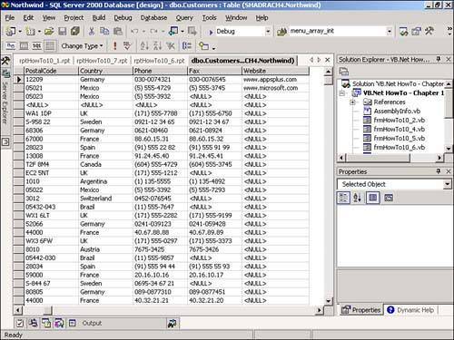
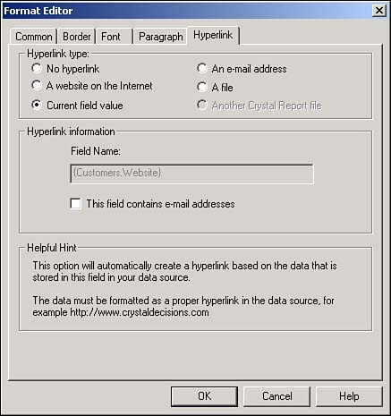
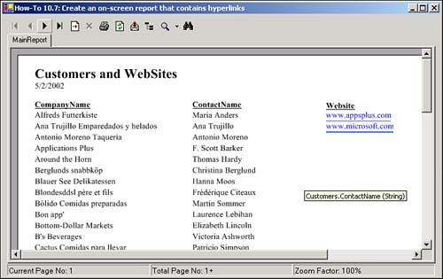

My user has a text field in his Customers table that is actually customers' Web sites. Users want to be able to access the site as a hyperlink on an onscreen report. How can I use Crystal Report to create a report that uses hyperlinks?
For this How-To, you won't be doing coding. You'll just adjust the formatting of a report field to tell it that it needs to treat the field like a hyperlink. Before doing this, you need to modify Northwind.
To accomplish this, you open the Northwind database in the Server Explorer. You then add a field called Website to the Customers table, with the Data Type of nchar and a size of 50.
You then modify the first two records in the Customers table so that the Website field contains www.appsplus.com and www.microsoft.com respectively, as shown in Figure 10.26.

Now you are ready to create the report.
You create a simple report that is based off the Customers table and contains the fields CompanyName, ContactName, and Website. Then you right-click on the Website field in the report and choose Format. The Format dialog box opens, where you can click on the Hyperlink tab. For the hyperlink type, you should choose Current field value (see Figure 10.27).

Now that you have told the field to act like a hyperlink, you need to have it look like one. To perform this task, you set the following properties:
BorderColor. This is set to RoyalBlue to give it the color of a hyperlink.
BottomLineStyle. This is set to crLSSingleLine.
EnableTightHorizontal. This is set to True so that it doesn't highlight the full length of the field-just to the text.
That's it! When you display this in a Viewer, as shown in Figure 10.28, you can click on the Website field, and the Viewer will bring you to the Web site you chose.

Open and run the Visual Basic .NET-Chapter 10 solution. Click on the button labeled How-To 10.7. You can click on the hyperlinks, displayed for the Web site, to go to the Web site.
Modify Northwind as described in the "Technique" section, adding the Website field to the Customers table.
Create a new Crystal Report. Choose Standard for the Report Expert to use.
Fill in the Data tab, choosing Northwind for the database, and Customers for the table to use.
Choose the fields as specified by the "Technique" section: CompanyName, ContactName, and Website. Click Finish.
With the report open in Design mode, right-click on the Website field in the Details section, and choose Format.
Make the modifications to the format of the field as described in the "Technique" section, setting the hyperlink type. Then click OK.
Make the rest of the format changes as described, setting the BorderColor, BottomLineStyle, and EnableTightHorizontal.
Create a Windows Form.
Drag on a ReportDocument object, and set it to point to the report you created in the past few steps. Then name your report document rdHowTo10_7.
Place a CrystalReportViewer on the form, setting the Anchor property to Top, Bottom, Right, Left and the ReportSource property to rdHowTo10_7.
Now when you run the report, you get your hyperlinks. You could have performed additional tasks with hyperlinks, such as using the report for reviewing those you want to email, and having the field be clickable that way.